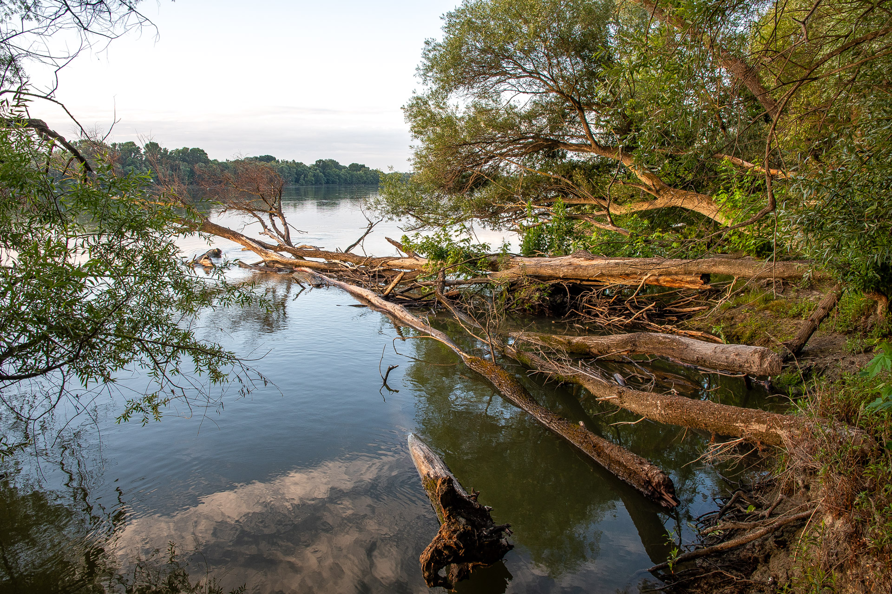

A hódok félvizi életmódot folytatnak, ami azt jelenti, hogy életük szorosan kötődik a tiszta, édesvizekhez és azok környezetéhez. Leggyakrabban lassan folyó folyók, patakok, tavak, mocsarak és holtágak mentén telepednek le, ahol a part mentén bőséges fás szárú növényzet található

A hódvár ás a környezet átalakitása
A hódok igazi mérnökök: ha a viz mélysége nem megfelelő, gátakat építenek, ágakból, kövekből és sárból, hogy felduzzasszák a vizet. A biztonságos menedéket nyújtó hódváraikat a viz közepén vagy a partfalba vájva alakitják ki, melyeknek bejárata mindig a vizfelszin alatt van, igy védve őket a ragadozóktól
Vizes élőhelyek ökoszisztémája
A hódok tevékenysége teljesen megváltoztatta a tájat. Az általuk létrehozott hódmocsarak és tavak új életfeltételeket teremtenek számos más faj, például halak, kétéltűek, vizimadarak és különleges növények számára. Emiatt a hódokat kulcsfontosságú (úgynevezett mernök) fajként tartják számon.